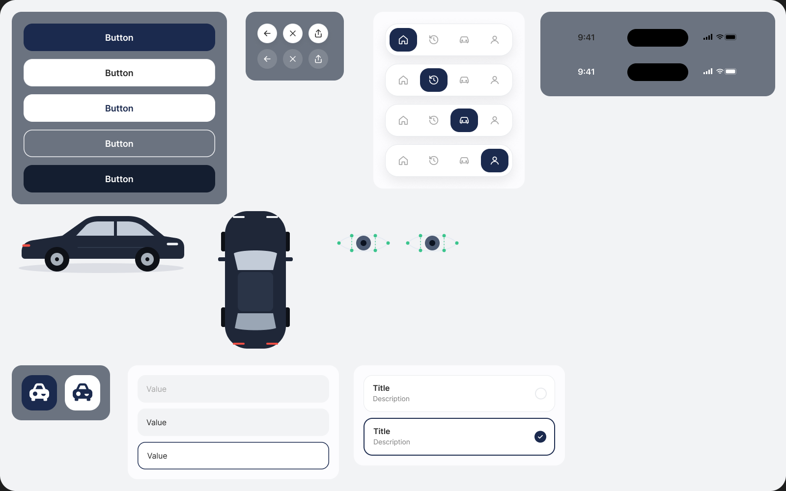
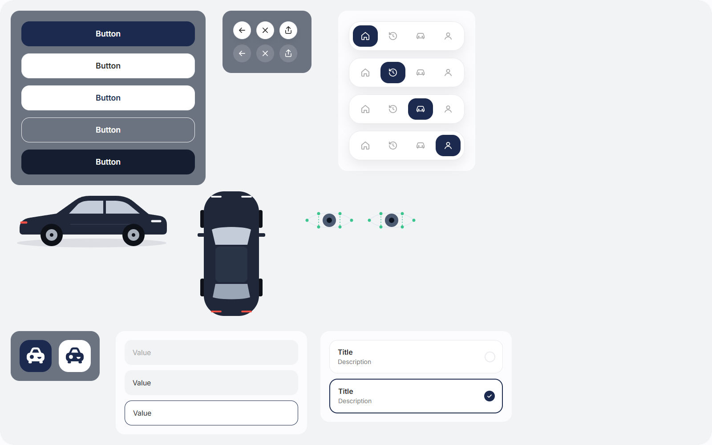

The original Figma Components frame and the running app at the same 1600 × 1000 size. The top-right status bars are intentionally absent in the app, as requested. Component dimensions, spacing, colours, vector geometry and shadow radii were checked against Figma. Option height differs by less than 1 px because browser text metrics differ from Figma.

